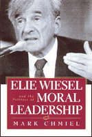

<body bgcolor="#FFFFFF" text="#000000" link="#0000FF" vlink="#CC0000" alink="#CC0000"><center><hr width="350" size="1" align="center" noshade>A sobering critique of the renowned Jewish writer and philosopher Wiesel<hr width="350" size="1" align="center" noshade><p><a href="https://cdcshoppingcart.uchicago.edu/Cart/ChicagoBook.aspx?ISBN=9781566398572&&PRESS=temple" target="_top">Buy this book!</a> | <a href="https://cdcshoppingcart.uchicago.edu/Cart/Cart.aspx?PRESS=temple" target="_top">View Cart</a> | <a href="https://cdcshoppingcart.uchicago.edu/Cart/Cart.aspx?PRESS=temple" target="_top">Check Out</a></p><p></p></center><!--none//--><h1>Elie Wiesel and the Politics of Moral Leadership</h1>
<h3>Mark Chmiel</h3>
<P>cloth 1-56639-857-6 $50.50, May 01, <FONT COLOR=#990033>Available</FONT>
<BR> 248 pp
6x9
</P><BLOCKQUOTE><I>"Mark Chmiel offers a bold and much-needed analysis of the moral pretensions of one of our country's most prominent public intellectuals. His thoughtful and measured examination of Elie Wiesel's ideas and actions reaches beyond the subject of this book into the heart of what is moral behavior in a troubled world."</I>
<br>&#151<b>Howard Zinn</b><I></I></BLOCKQUOTE>
<p>Holocaust survivor and Nobel Peace Laureate Elie Wiesel has long opposed the silence of bystanders that allows atrocities like the Holocaust to occur. Nevertheless, since the 1980s, Wiesel has come under criticism for his refusal to speak out about the State of Israel's treatment of the Palestinian people.
<p>Mark Chmiel's thoroughly researched and penetrating study is the first book to examine both Wiesel's practice of solidarity with suffering people and his silence before Israeli and American power. Drawing on Edward Herman and Noam Chomsky's studies on "worthy and unworthy victims," the author analyzes Wiesel's initiatives of Jewish and universal solidarity with groups ranging from Holocaust survivors and Russian Jews to Vietnamese boat people and Kosovar refugees.
<p>Chmiel also critically engages Wiesel's long-standing defense of the State of Israel as well as his confrontations and collaborations with the U.S. government, including the birth of the U.S. Holocaust Memorial Museum, the 1985 Bitburg affair with President Reagan, and U.S. intervention in the Balkans.
<p>Throughout, the author probes the nuances and ambiguities of Wiesel's human rights activism and shows the various uses to which his Holocaust discourse has been put, both in the Middle East conflict and in issues involving U.S. foreign policy.
<p><I>Elie Wiesel and the Politics of Moral Leadership</I> provides a provocative view of one the most acclaimed moralists in recent American history and raises important questions about what it means to be a responsible intellectual in the United States.
<BR>&nbsp;<h2>Excerpt</h2><P>Excerpt available at <a href="http://www.temple.edu/tempress">www.temple.edu/tempress</a></p>
<BR>&nbsp;<h2>Reviews</h2>
<p><I>"In this courageous book, Mark Chmiel details the ambiguity of Elie Wiesel's moral witness. On the one hand, he has been a powerful voice calling the Western world to account for the Holocaust and intervening in other social tragedies. On the other hand, he has been consistently unwilling to respond to the plight of the Palestinians, victims of the Jewish state. In conclusion Chmiel calls those concerned with a consistent moral witness today to pay particular attention to the politically disregarded victims, whose victimization exposes the imperialism of the dominant powers."</I>
<br>&#151<b>Rosemary Radford Ruether</b>, author of <I>Christianity and the Making of the Modern Family</I>
<p><I>"Chmiel offers the first serious critique of this modern-day Jewish prophet's life and work."</I>
<br>&#151<b><I>Publishers Weekly</I></b>
<p><i>"... this is an excellent resource for anyone who might be interested in the educated Christian perspective on American foreign policy of the last thirty-five years. And most importantly, this book is a valuable and candid portrait of a writer as witness, a man at work in the world as a guardian of victims and would-be victims and as a moral defender and champion of ideas."</i>
<br>&#151<b><i>Shofar</i></b>
<p><i>"...is a useful reflection on the politics of victimhood and a caution against moral leaders who would clean up every backyard but their own."</i>
<br>&#151<b><i><a href="http://www.findarticles.com/p/articles/mi_qa4010/is_200111/ai_n9014367" target="new">Sojourners Magazine</a></i></b>
<BR>&nbsp;<h2>Contents</h2><P>
<p>Preface
<br>Acknowledgments
<p>1. The Jewish Remembrancer: A Political Reading
<br>&nbsp;&nbsp;&nbsp;&nbsp;Themes of a Life
<br>&nbsp;&nbsp;&nbsp;&nbsp;The Political Economy of Worthy and Unworthy Victims
<p>2. The Impassioned Advocate: Jewish Solidarity
<br>&nbsp;&nbsp;&nbsp;&nbsp;Respecting the Dead
<br>&nbsp;&nbsp;&nbsp;&nbsp;Defending the Survivors
<br>&nbsp;&nbsp;&nbsp;&nbsp;Mobilizing for Russian Jewry
<p>3. The Cosmopolitan Witness: Global Solidarity
<br>&nbsp;&nbsp;&nbsp;&nbsp;A Final Solution in Paraguay
<br>&nbsp;&nbsp;&nbsp;&nbsp;Southeast Asian Refugees
<br>&nbsp;&nbsp;&nbsp;&nbsp;Central America in the 1980s
<p>4. The Diaspora Apologist: Israel and the Fate of Palestine
<br>&nbsp;&nbsp;&nbsp;&nbsp;The Mystical Triumph of 1967
<br>&nbsp;&nbsp;&nbsp;&nbsp;Confrontations and Disputations
<br>&nbsp;&nbsp;&nbsp;&nbsp;From the 1982 Lebanon Invasion to the "Peace Process"
<p>5. The Worthy Victim: Moral Authority and State Power
<br>&nbsp;&nbsp;&nbsp;&nbsp;The Carter Administration and Sacred Memory
<br>&nbsp;&nbsp;&nbsp;&nbsp;The Reagan Years
<br>&nbsp;&nbsp;&nbsp;&nbsp;Bosnia, Kosovo, and Clinton
<p>6. The Unfinished Project of Solidarity: If We Remain Silent
<br>&nbsp;&nbsp;&nbsp;&nbsp;Dangerous Remembrance
<br>&nbsp;&nbsp;&nbsp;&nbsp;From Bystanders to Resisters
<br>&nbsp;&nbsp;&nbsp;&nbsp;A Preferential Option for Unworthy Victims
<p>Notes
<br>Index
</P><BR>&nbsp;<H2>About the Author(s)</H2>
<table><tr><td valign="top"><img src="/tempress/authors/1525_au.gif" height="90" width="75"></td><td width="100%" valign="middle"><p><b>Mark Chmiel</b> is Adjunct Professor of Theological Studies at Saint Louis University and Adjunct Professor of Religious Studies at Webster University.</P></td></tr></table>
<BR><H2>Subject Categories</H2>
<p><A HREF="/tempress/jewish.html" TARGET="_top">Jewish Studies</a>
<BR><A HREF="/tempress/philosophy.html" TARGET="_top">Philosophy and Ethics</a>
<BR><A HREF="/tempress/american.html" TARGET="_top">American Studies</a>
</p>
<p align="center"><a href="https://cdcshoppingcart.uchicago.edu/Cart/ChicagoBook.aspx?ISBN=9781566398572&&PRESS=temple" target="_top">Buy this book!</a> | <a href="https://cdcshoppingcart.uchicago.edu/Cart/Cart.aspx?PRESS=temple" target="_top">View Cart</a> | <a href="https://cdcshoppingcart.uchicago.edu/Cart/Cart.aspx?PRESS=temple" target="_top">Check Out</a></p><p><font face="Arial" size="1"><a href="copyright.html" onMouseOver="window.status='Web Copyright Policy';return true;" onMouseOut="window.status=''" title="Web Copyright Policy">&copy;</a> 2015 <a href="http://www.temple.edu" target="new" onMouseOver="window.status='Link to Temple University home page';return true;" onMouseOut="window.status=''" title="Link to Temple University home page">Temple University</a>. All Rights Reserved. http://www.temple.edu/tempress/titles/1525_reg.html</font></p>